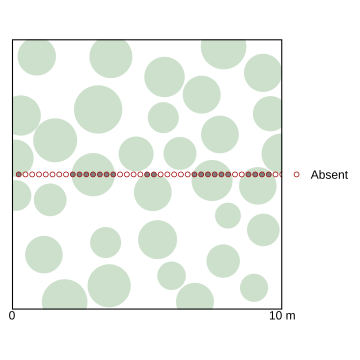

2025-05-22

# set up
library("tidyverse")
library("fs")
library("readxl")
library("writexl")
library("sf")
library("Cairo")
library("gstat")
rm(list = ls())
set.seed(42)
target_cover <- 0.5
dispersion_factor <- 00.5
n <- 1e3
start <- now()
# generate data{{{
# ------------------------------------------------------------------------------
plot_dim <- 10 # plot is 10 x 10 m
mean_r <- 0.75 # mean shrub diameter is 1.5m
sd_r <- mean_r / 6 # 96% shrubs are 1.5m +/- 0.5m; 2 sd = 0.5m/1.5m = 1/3
make_circle <- function() {# {{{
x = runif(n = 1, max = plot_dim)
y = runif(n = 1, max = plot_dim)
r = rnorm(n = 1, mean = mean_r, sd = sd_r)
center <- st_point(c(x, y)) %>% st_sfc()
circle <- st_buffer(center, dist = r) %>% st_sfc()
circles <- st_sf(r = r, center = center, circle = circle)
st_geometry(circles) <- "circle" # make circle col active geometry column
return(circles)
}
# }}}
plot_area <- plot_dim^2
make_circles <- function() {
circles <- make_circle()
percent_cover <- st_area(circles$circle) / plot_area
while (percent_cover < target_cover) {
new_circle <- make_circle()
# simulate dispersion
dist <- st_distance(new_circle$center, circles$center)
r_sum <- new_circle$r + circles$r
meets_dispersion_req <- (dist >= r_sum * dispersion_factor) %>% all()
if (meets_dispersion_req) {
circles <- bind_rows(circles, new_circle)
circles_area <- st_union(circles$circle) %>%
st_area(circles_union)
percent_cover <- circles_area / plot_area
}
}
return(circles)
# return(circles_combined)
}
points_interval <- 0.25
make_points <- function() {
x <- seq(from = points_interval, to = plot_dim, by = points_interval)
# y <- runif(n = 1, max = plot_dim)
y <- 5
tibble(x = x,
y = y) %>%
st_as_sf(coords = c("x", "y"), sf_column_name = "point")
}
circles <- make_circles()
points_1 <- make_points()
points_1 <-
points_1 %>%
mutate(result = {
st_intersects(point, circles$circle) %>%
lengths() %>% `>`(0)
},
legend = {
if_else(result, "Presence", "Absence") %>%
factor(levels = c("Presence", "Absence"))
})
# ig_within_1m <- TRUE
# while (is_within_1m) { # transects must be at least 1m apart
# points_2 <- make_points()
# is_within_1m <- st_distance(points_1[1, ], points_2[1, ]) < 1
# }
# points_2 <-
# points_2 %>%
# mutate(result = {
# st_intersects(point, circles$circle) %>%
# lengths() %>% `>`(0)
# },
# legend = {
# if_else(result, "Presence", "Absence") %>%
# factor(levels = c("Presence", "Absence"))
# })
# }}}
# plot plot{{{
# ------------------------------------------------------------------------------
alpha <- 0.8
circle_color <- '#cccccc'
point_size <- 2
text_size <- 14
x <- ggplot() +
geom_sf(data = circles, fill = circle_color, color = NA, alpha = alpha) +
geom_sf(data = points_1, aes(fill = legend),
shape = 21,
size = point_size) +
# geom_sf(data = points_2, aes(fill = legend),
# shape = 21,
# size = point_size) +
scale_fill_manual(name = NULL, # No legend title
values = c("Presence" = "black",
"Absence" = "transparent"),
drop = FALSE) + # absent levels are shown
scale_x_continuous(breaks = c(0, plot_dim),
labels = c("0", paste0(plot_dim, " m"))) +
theme_minimal() +
theme(
panel.grid = element_blank(),
axis.title.y = element_blank(),
axis.text.y = element_blank(),
axis.title = element_blank(),
axis.text.x = element_text(color = "black", size = text_size),
axis.line.x = element_line(linewidth = 0.3),
axis.ticks.x = element_line(linewidth = 0.3),
legend.text = element_text(size = text_size)
)
ggsave("_public/plot.svg", device = CairoSVG)
# }}}
# variogram from scratch{{{
# ------------------------------------------------------------------------------
get_semivariance <- function(data, lag) {
# γ(h) = ½ × E[(Z(x) - Z(x+h))²]
value_at_lag = lag(data, n = lag)
variance = (value_at_lag - data)^2
0.5 * mean(variance, na.rm = TRUE)
}
max_lag <- (plot_dim / points_interval) / 2
lags <- 1:max_lag
make_variogram <- function(data) {
tibble(lag = lags,
`dist (m)` = lags * points_interval,
semivariance = map_dbl(lags, function(x) {
get_semivariance(data, x)
}))
}
variogram_data <- make_variogram(points_1$result)
# first 12 rows (3 m) to mimic gstat
ggplot(variogram_data[1:12, ], aes(x = `dist (m)`, y = semivariance)) +
geom_point() +
geom_line() +
labs(title = "Empirical Variogram")
# }}}
# confirm with gstat{{{
# ------------------------------------------------------------------------------
v <- variogram(result ~ 1, points_1)
ggplot(v, aes(dist, gamma)) +
geom_point() +
geom_line() +
labs(title = "Empirical Variogram")
# }}}
# plot variogram{{{
# ------------------------------------------------------------------------------
run_simulation <- function() {
circles <- make_circles()
points <- make_points() %>%
mutate(result = {
st_intersects(point, circles$circle) %>%
lengths() %>% `>`(0)
})
make_variogram(points$result)
}
.variogram_data <-
map(1:n, function(x) run_simulation()) %>%
reduce(`+`) %>%
mutate(across(everything(), function(x) x / n))
x <- ggplot() +
geom_line(data = .variogram_data, aes(x = `dist (m)`, y = semivariance)) +
labs(x = "Lag Distance (m)", y = "Semivariance") +
theme_minimal() +
theme(
panel.grid = element_blank(),
# panel.grid.major.y = element_blank(),
# panel.grid.minor.y = element_blank(),
axis.title = element_text(size = text_size),
axis.text.y = element_blank(),
axis.line.y = element_blank(),
axis.ticks.y = element_blank(),
axis.text.x = element_text(color = "black", size = text_size),
axis.line.x = element_line(linewidth = 0.3),
axis.ticks.x = element_line(linewidth = 0.3),
)
ggsave("_public/variogram.svg", height = 3, device = CairoSVG)
# }}}
finish <- now()
print(finish - start)
# compare to moran's I{{{
# ------------------------------------------------------------------------------
make_points() %>%
mutate(result = test_intersection(point, circles$circle))
# }}}
# # clip{{{
# system(paste("inkscape",
# "--export-area-drawing",
# "--export-plain-svg",
# "--export-filename=_public/transect.svg",
# "_public/transect.svg"))
# }}}